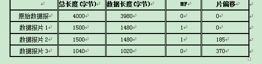

4．假定你在浏览器上点击一个URL，但是这个URL的IP地址以前并没有缓存在本地主机上。因此需要用DNS自动查找和解析。假定要解析到所要找的URL的IP地址共经过n个DNS服务器，所经过的时间分别为RTT1,RTT2,…,RTTn。假定同一台WEB服务器的HTML文件中又链接了三个图片对象。若忽略这些对象的发送时间，试计算客户点击读取这些对象所需的总时间。
(1) 没有并行TCP连接的非持续HTTP；
(2) 使用并行TCP连接的非持续HTTP；
(3) 流水线方式的持续HTTP。
答：（1）所需时间=RTT1+RTT2+…+RTTn+8RTT。
（2）所需时间=RTT1+RTT2+…+RTTn+4RTT。
（3）所需时间=RTT1+RTT2+…+RTTn+3RTT。
注意：RTT是浏览器与WEB服务器之间的往返时延。
5．通信信道带宽为1Gb／s，端到端时延为10ms。TCP的发送窗口为65535字节。试问：可能达到的最大吞吐量是多少?信道的利用率是多少?
答： 一个发送窗口的比特数：L=65536×8=524280
数据速率为：C=109b/s
则发送时间为：L/C=0.000524s = 0.524 ms
Td=10×10-3s=10ms，则往返时间为：2 ×Td=20ms
最大吞吐量为：L/(L/C+2×Td)=524280bit/20.524ms =25.5Mb/s
信道利用率为：(L/C)/(L/C+2×Td) = 0.524ms/20.524ms = 0.0255
因此，最大吞吐量为25.5Mb/s。信道利用率为2.55%
模拟试卷B
一．填空题（每空1分，共20分）
1．光纤通信中，按使用的波长区之不同可分为（单模 ）光纤通信方式和（多模）光纤通信方式。
2．我国电话网络采用欧洲的E1标准，通常称之为30B+D，即一次群上有30个用户信道和一个信令信道，它的数据传输速率是（2.048M）bps。而与此对应的北美标准T1是24B+D，它的数据传输速率是（1.544M）bps。
3．在可靠数据传输中常用滑动窗口协议，滑动窗口协议可用于（差错 ）控制和（ 流量）控制。
4．以太网（Ethernet）所采用的CSMA/CD算法主要包括（ 1-坚持 ）CSMA/CD和（ 截断的二进制指数退避算法 ）算法。
5．用于网际互连的中继设备称为网间连接器或中继系统。按照它们进行协议和功能转换对象的不同，可以分为转发器（Repeater）、网桥（Bridge）、路由器（Router）和网关（Gateway）。其中，（网桥）提供数据链路层的协议转换，而（ 网关 ）专用于高层协议的转换。
6．会话层是OSI模型的第五层。它利用（ 传输 ）层所提供的服务，并向（ 表示 ）层提供由它增强了的服务。
7．物理层标准规定了物理接口的机械特性、电气特性、（功能）特性以及（规程 ）特性。
8．能从数据信号波形中提取同步信号的方法称（ 自同步编码 ），典型的是（曼彻斯特码 ），这种编码被用于以太网的信号传输。
9．根据交换的路由信息的不同，可以把因特网的路由协议分为两大类：即（ 距离矢量）路由协议和（链路状态）路由协议。
10．电子邮件的传送是利用（SMTP）协议进行的，其主要任务是负责在邮件服务器之间的邮件传送；而用户收信则利用POP或（IMAP）协议。
二．单项选择题（每小题2分，共20分，答案添入下表中）
1．因特网的网际层有四个重要的协议，分别为（ ）。 C
A.IP，ICMP，ARP，UDP B.TCP，ICMP，UDP，ARP C.IP，ICMP，ARP，RARP D.UDP，IP，ICMP，RARP
2．路由器的路由表表项主要包括目的网络地址、下一站IP地址以及（ ）。 B
A. 时间 B. 子网掩码C. 距离 D. 费用
3．采用脉码调制方法对声音信号进行编码，每秒钟采样32000次，每次采样有256个量化级，那么数据传输率就要达到 C
A．8．192Mbps B．512KbpsC．256Kbps D．1．544Mbps
4．关于TCP/IP 的传输层端口号，以下哪个端口号范围标识了所有常用因特网应用？（ ） C
A. 0 到 255 B.256 到 1023 C. 0 到 1023 D.1024 到 65535
5．网络层、数据链路层和物理层传输的数据单位分别是（ ）。 C
A. 报文、帧、比特 B.分组、报文、比特C. 分组、帧、比特 D.数据块、分组、比特
6．下列哪项是 UDP 的重要特征。（ ） B
A. 确认数据正确接收B. 数据传输的延迟较短C. 数据的可靠传输D. 收发双方按相同顺序传输
7．两台设备利用PPP协议按同步传输方式进行通信，假设信息帧中含有一数据字节3FH，则在发送时（假设发送顺序先高位后低位），发送端需将它转换成哪一种形式再发送？ （ ） B
A．001011111 B．001111101 C．001101111 D．011111010
8．10Mb/s以太网一般采用基带系统，其中使用（ ）编码来传输信号。 C
A．不归零 B．差分曼彻斯特 C．曼彻斯特 D．4B/5B
9．因特网中哪一层负责规范信息从源设备到目的设备之间准确可靠地传递。（ ） B
A. 应用层 B.运输层 C.网际层 D.数据链路层
10．128．12．10．4属于（ ）IP地址。 B
A．A类 B．B类C．C类 D．D类
三．简答题（每小题6分，共30分）
1．主机A发送IP数据报给主机B,途中经过了5个路由器。试问在IP数据报的发送过程总共使用几次ARP？
答：假设当前路径上的主机和路由器的ARP表中都没有下一跳路由器MAC地址，则共需6次。主机A先通过ARP得到第一个路由器的MAC，之后每一个路由器转发前都通过ARP得到下一跳路由器的MAC，最后一条路由器将IP包发给B前仍要通过ARP得到B的MAC，共6次。
2．什么是局域网的生成树协议（STP），其工作的主要步骤是什么？答：协议略。主要步骤为：确定ROOT桥；确定其余各桥的ROOT端口；确定每个网段的指派桥和指派端口。 只有指派桥可以转发帧，这样就可以消除回路。
3．TCP/IP可以分为哪几层次？简述3个最基本的TCP/IP应用？答：四个层次：应用层、传输层、互连网层、网络接口层。
三个最基本应用：电子邮件、文件传输、远程登录。
4．比较数据报服务与虚电路服务的特点。
答：数据报服务：无连接；每个分组带上完整地址信息；每个分组独立路由；故障时影响小；不保证按序、可能丢失；复杂处理由传输层承担
虚电路服务：面向连接；连接建立后每个分组仅带上虚电路号；仅建立虚电路时实施路由选择；故障时影响大；保证按序、可靠传输；复杂处理由网络层承担
5．IP 地址分为几类？各有什么特点？
答：IP地址被分为A、B、C、D、E五类，主要使用A、B、C三类。
A类地址：A类地址的net-id由左侧的高8位二进制位表示，网络中的host-id占剩余24位二进制位，A类地址的特点是net-id的第一位二进制数取值必须为“0”。A类地址允许有126个网段。
B类地址：B类地址的net-id由左侧的高16位二进制位表示，网络中的host-id占剩余的16位二进制位，B类地址的特点是net-id的最高2位二进制数取值必须为“10”。
C类地址：C类地址的net-id由左侧的高24位二进制位表示，网络中的host-id占占剩余的8位二进制位，C类地址的特点是net-id的最高3位二进制数取值必须为“110”。
D类为多播地址，E类为保留地址。
四．应用题（每小题6分，共30分）
1．一个PPP帧的数据部分（用十六进制写出）是7D 5E FE 27 7D 5D 7D 5D 65 7D 5E。试问真正的数据是什么（用十六进制写出）？
答：把数据部分的转移序列进行恢复：7D 5E –> 7E；7D 5D -> 7D；7D 5D -> 7D；7D 5E –> 7E
得到：原始数据序列为7E FE 27 7D 7D 65 7E。
2．若采用生成多项式G（x）=x4 + x2 + x + 1为信息位1111101产生循环冗余位，加在信息位后面形成码字，再经零插入（比特填充）后从左至右发送，求发送时的比特序列。
答：先求出余式R（X）：x3+x2+x+1， 即1111，得到码字为11111011111
再经零比特填充后从左至右发送的比特序列：1111100111110
3．已知地址块中的一个地址是140.120.84.24/20。试求这个地址块中的最小地址和最大地址。地址掩码是什么？地址块中共有多少个地址？相当于多少个C类地址？
答：对于地址140.120.84.24，将第三个字节转换为二进制：
140.120.(0101 0100).24
最小地址是 140.120.(0101 0000).0/20 (即140.120.80.0/20)
最大地址是 140.120.(0101 1111).255/20 (即140.120.95.255/20)
地址数为212=4096，相当于16个C类地址。
4．假定1km长的CSMA/CD网络的数据率为1Gb/s。设信号在网络上的传播速率为200000km/s。求能够使用此协议的最短帧长。
答：对于1km电缆，单程传播时间为1÷200000=5×10-6s，即5us，往返路程的传播时间为10us。为了能够按照CSMA/CD工作，最短帧的发送时间不能小于10us。以1Gb/s速率工作，10us可以发送的比特数等于：
因此，最短帧是10000位（或1250字节）。
5．一个IP数据报长度为4000字节（固定首部长度）。现在经过一个网络传送，但此网络能够传送的最大传输单元为1500字节。试问应当划分为几个短些的数据报片？各数据报片的数据字段长度、片偏移字段和MF标志应为何数值？
答：原IP数据报的首部长度为20字节，因此实际数据长度为4000-20=3980字节。
所经过的网络的MTU为1500，因此其中的IP数据报的数据位1480字节。
首先验证1480必须能够被8整除（否则取小于该数且被8整除的最大整数作为分片的单位）。
3980÷1480=2.69，必须分成3片。计算结果如下表：

模拟试卷C
一．填空题（每空1分，共20分）
1．停等协议有时也称为空闲ARQ，其发送窗口和接收窗口的值都是（1）；连续ARQ协议有时也称为（后退N（或GO_BACK_N）），发送方可以在未得到前面已发送报文的确认之前连续发送多个数据报文。
2．为了提高地址的利用率，可以利用划分子网的方法。划分子网的基本思想是将IP地址结构从原来的（ 二 ）层修改为（ 三 ）层。
3．点对点协议(PPP，Point-to-Point Protoco1)，它由三个部分组成：即帧的定界方法、（链路控制协议，或LCP）以及（网络控制协议，或NCP）。
4．WWW上的每一个网页对象都有一个独立的地址标识，这些地址标识被称为（统一资源定位器（或URL）），例如访问“华东师范大学”首页的地址标识为（http://www.ecnu.edu.cn/） 。
5．对一个规模较大的网络来说，广播包从一个LAN传送到另外一个LAN，常常会引起大量的（多路广播），造成网络效率下降，最严重的将导致（广播风暴），使整个网络瘫痪。
6．为了能够寻址应用进程，因特网定义了一个称为Socket的概念，一个Socket实际上就是一个端点。端点的组成包括（IP地址）与（端口号）。
7．运输层提供的是（端到端）的流量控制，即在一个主机没有收到（确认）之前最多能够向另一个主机发送多少信息量。
8．VLAN的主要优点有两个，一个是能够隔离（ 广播）域；另一个是提高了网络的（安全性）。
9．因特网中的传统用户远程登录应用，是指用户使用（Telnet）命令，使自己的本地计算机成为远程计算机的一个（仿真终端）的过程。
10．RFC1918规范中定义了三个网络地址范围保留为内部网络使用。其中对应C类地址的地址段为：（192.168.0.0） ~（ 192.168.255.255）。
二．单项选择题（每小题2分，共20分，答案添入下表中）
1．下面对路由选择算法描述正确的有（ ） D
A．路由选择算法一般分为分布式路由选择算法和集中式路由选择算法
B．OSPF属于静态路由选择算法
C．路由选择算法和路由协议的作用是相同的
D．RIP属于动态路由选择算法
2．以下哪个事件发生于因特网传输层的三次握手期间。（ ） B
A. 两个应用进程交换数据。
B. 初始化数据段的序号。
C. 确定要发送的最大字节数。
D. 确认接收的数据字节数。
3．下面对CSMA/CD描述不正确的是（ ） A
A．其含义为载波侦听、多路访问/冲突避免。
B．是一种争用型的介质访问控制协议。
C．CSMA/CD协议中，LLC帧是封装在MAC帧的数据单元部分进行传输的。
D．适用于总线型网络。
4．BGP属于下列哪种类型的协议（ ）。 B
A. 内部网关协议 B.外部网关协议
C.混合路由协议 D.区内路由协议
5．在TCP协议中，拆除连接时需要将首部字段中的（ ）标志位置“1”。 B
A．ACK B．FIN C．RST D．SYN
6．在使用路由器互联的多个局域网中，通常要求每个局域网的（ ）。 D
A. 数据链路层协议和物理层协议必须相同
B. 数据链路层协议必须相同，而物理层协议可以不同
C. 数据链路层协议可以不同，而物理层协议必须相同
D. 数据链路层协议和物理层协议都可以不相同
7．在因特网中，IP数据报从源结点到目的结点可能需要经过多个路由器。在整个传输过程中，IP数据报首部的（ ）。 A
A. 源地址和目的地址都不会发生变化
B. 源地址有可能发生变化而目的地址不会发生变化
C. 源地址不会发生变化而目的地址有可能发生变化
D. 源地址和目的地址都有可能发生变化
8．在计算机网络中，主机及主机上运行的进程可以用（ ）来标识。 A
A．IP地址，端口号 B．端口号，IP地址
C．IP地址，主机地址 D．IP地址，MAC地址
9．下面几个 IP 地址中，哪一个是可以分配给主机的合法地址？（ ） A
A. 29.9.255.15 B. 127.21.19.109
C. 192.5.91.255 D. 220.103.256.56
10．有关IPV6说法不正确的是（ ） D
A. IPV6允许在报头后增加扩展报头，以扩展新的功能。
B. IPV6的安全机制是基于IPSEC的协议实现的。
C. IPV6的路由选择是基于地址前缀概念实现的，便于建立层次化的路由结构。
D. IPV6的安全机制具有可选性。
三．简答题（每小题6分，共30分）
1．什么是数据链路层的三个基本问题？为什么这三个问题都必须加以解决？
答：三个基本问题分别是帧定界、透明传输和差错检测。
帧定界使接收方能从收到的比特流中准确地区分出一个帧的开始和结束在什么地方；
透明传输使得不管上层所传数据是什么样的比特组合，都应当能够在链路上传送，因此也很重要；
差错控制主要包括差错检测和差错纠正，目的在于降低传输的比特差错率，因此也必须解决。
2． TCP的校验时的伪头包括哪些主要字段？为什么要加上12字节的伪头？
答：字段为协议号、报文长度、源IP地址和目的IP地址。加上伪头是为了区分不同的连接和所使用的传输层协议。
3．简述利用ICMP报文查找PATH MTU（即路径上的最大不分片报文长度）的方法。
答：在向目标发送一个IP分组时，其中数据长度从本地的最大MTU出发，依次减少1字节，IP首部的DF标志应该设置为1。这样如果中间一个结点发现必须要分片，就会向源站报一个ICMP错，即目标不可达。
注：为提高效率，长度可以使用二分法确定。
4．试比较xDSL，HFC以及FTTx接入技术的优缺点。
答：（1）xDSL 技术就是用数字技术对现有的模拟电话用户线进行改造，使它能够承载宽带业务。特点是成本低，易实现，但带宽和质量差异性大。
（2）HFC网最大的优点是具有很宽的频带，并且可利用原有的CATV有线电视网。但是要将现有的450 MHz 单向传输的有线电视网络改造为 750 MHz 及以上的双向传输的 HFC 网需要花费相当多的资金和时间。
（3）FTTx（光纤到……）这里字母 x 可代表不同意思。由于使用光纤传输，因此可提供最佳的带宽和质量，但线路与工程的成本太大，很难在短期内推广。
5．为什么要使用信道复用技术？常用的信道复用技术有哪些？
答：信道复用的目的是让不同的计算机连接到相同的信道上,以共享信道资源。在一条传输介质上传输多个信号,提高线路的利用率，降低网络的成本。这种共享技术就是多路复用技术。
常用的信道复用技术有FDM和TDM。
（1）频分复用（FDM）：将用于传输信道的总带宽划分成若干个子频带（或称子信道），每一个子信道传输1路信号。
（2）时分复用（TDM）：将整个信道传输信息的时间划分成若干时间片（简称时隙），并将这些时隙依次分配给每一个用户（信号源）使用，每一路信号在自己的时隙内独占信道进行数据传输。时分复用技术的特点是时隙事先规划分配好且固定不变，所以有时也叫同步时分复用。其优点是时隙分配固定，便于调节控制，适于数字信息的传输；缺点是当某信号源没有数据传输时，它所对应的信道会出现空闲，而其他繁忙的信道无法占用这个空闲的信道，因此会降低线路的利用率。
四．应用题（每小题6分，共30分）
1．长度为100字节的因特网应用层数据，从上至下依次传递给传输层、网络层和以太网，试问最终从网络接口传送出至少多少位的比特序列?信道有效利用率为多少?
答：（1）对于UDP：（100+8+20+18）*8 = 1168（bit）；信道有效利用率为：100/（100+8+20+18）=68%
（2）对于TCP：（100+20+20+18）*8 = 1264（bit）；信道有效利用率为：100/（100+20+20+18）=63%
2．已知信道的数据传输速率为1M bps，信号从发送端沿介质传播到接收端的时间d = 2ms，假设帧长度为1000 bits、帧序号用3 bits表示，且确认ACK不采用捎带方式。不考虑差错重发和帧头所造成的信道损失，并且忽略ACK帧长度，问：
当采用选择性重发协议时，信道的最大利用率（%）为多少?
答：当帧号长度为3位时，对选择重发的协议，发送和接收窗口尺寸取：W = 8 / 2 = 4
传输速率B = 1M bps = 1000 b/ms
信号往返传播延迟时间为2d = 4 ms
帧长度L = 1000 bits，发送一帧需要的时间：L/B=1ms
当t = 0时，发送端开始发送
t = 1 ms时，第一帧发送完成
t = 3 ms时，第一帧全部到达接收端
t = 5 ms时，第一帧的ACK返回
由于发送窗口为4，所以在第一帧开始发送到ACK返回的5 ms时间内，最多只能发送4帧，如果不考虑差错重发和帧头所造成的信道损失，并忽略ACK帧长度，则
信道的最大利用率（%）= ( 4 L/B) / ( L/B + 2d ) = 4/5 = 80%
3．一个3200位长的TCP报文传到IP层，加上160位的首部后成为数据报。下面的互联网由两个局域网通过路由器连接起来。但第二个局域网所能传送的最长数据帧中的数据部分只有1200位。因此数据报在路由器必须进行分片。试问第二个局域网向其上层（提示：指网络层）要传送多少比特的数据？
答：IP数据报的长为：3200+160=3360 bit
第二个局域网分片应分为 [3200/（1200-160）]=4片，每片含IP首部的长度为1200bit，不含IP首部的长度为1040bit。
四片的首部共为：160*4=640 bit
则总共要传送的数据共3200+640=3840 bit。
4．主机A向主机B连续发送了两个TCP报文段，其序号分别为70和100。试问：
（1） 第一个报文段携带了多少个字节的数据？
（2） 主机B收到第一个报文段后发回的确认中的确认号应当是多少？
（3） 如果主机B收到第二个报文段后发回的确认中的确认号是180，试问A发送的第二个报文段中的数据有多少字节？
（4） 如果A发送的第一个报文段丢失了，但第二个报文段到达了B。B在第二个报文段到达后向A发送确认。试问这个确认号应为多少？
答：（1）第一个报文段的数据序号是70到99，共30字节的数据。
（2）确认号应为100。
（3）180－100=80字节。
（4）70。
5．假定站点A和B在同一个10Mb/s以太网网段上。这两个站点之间的时延为225比特时间。站点A和B在t=0时同时发送了数据帧。当t=225比特时间，A和B同时检测到发送了碰撞，并且在t=225+48=273比特时间完成了干扰信号的传输。A和B在CSMA/CD算法中选择不同的r值退避。假定A和B选择的随机数分别是rA=0和rB=1。试问A和B各在什么时间开始重传其数据帧？A重传的数据帧在什么时间到达B?A重传的数据会不会和B重传的数据再次发送碰撞？B会不会在预定的重传时间停止发送数据？
答：t=0时，A和B开始发送数据。
t=225比特时间，A和B都检测到碰撞。
t=273比特时间，A和B结束干扰信号（JAM）的传输。
t=594（273+225(B的JAM最后一个比特到达A)+96（帧间隙））比特时间，A开始发送
t=785（273+512（争用期））比特时间，B再次检测信道。如空闲，则B在881（785+96）比特时间发送数据。否则再退避。
A重传的数据在819（594+225）比特时间到达B,因此B将检测到信道忙，因此B在预定的881比特时间不会发送数据。
模拟试卷D
一．填空题（每空1分，共20分）
1．因特网的域名采取（层次）结构，其格式一般可表示为：主机名.三级域名.二级域名.（顶级）域名。
2．IP地址的host-id部分如果全为1，则表示（广播）地址；IP地址的host-id部分如果全为0，则表示（网络）地址。
3．在因特网中负责主机名称与IP地址之间的转换的协议称为（DNS），负责IP地址与物理地址之间的转换协议称为（ARP）。
4．同轴电缆按阻抗可分为50欧姆和75欧姆两种。50欧姆同轴电缆主要用于传输数字信号，此类同轴电缆叫做（基带）同轴电缆；而75欧姆同轴电缆主要用于传输模拟信号，此类同轴电缆又称为（宽带）同轴电缆。
5．表示层是OSI模型的第六层。它需要进行（抽象 ）语法与（传送 ）语法的转换来保证用户的数据语义在传输过程中保持不变。
6．基于检错码的差错控制技术称为ARQ方法，而ARQ的差错控制方式又分为（Go_back_n）和（选择性重发）。
7．从计算机网络系统组成的角度看，因特网可以分为（核心）部分和（边缘）部分，其中后者主要包括用户的主机和终端等设备。
8．因特网中，为了便于人们记忆，IP地址采用了（点分十进制）表示形式，即使用圆点字符分隔四个十进制数，每个十进制数的取值范围为（0~255）。
9．TCP/IP的网络层（或网际层）最重要的协议是（IP或网际协议），它用于将多个网络连成一个互联网。该层还有一个很重要的协议是（ICMP），ping工具就利用了它的报文。
10．计算机网络中，分层和协议的集合称为计算机网络的（体系结构）。其中，实际应用最广泛的是（TCP/IP）协议，它组成了因特网的一整套协议。
二．单项选择题（每小题2分，共20分，答案添入下表中）
1．Ethernet局域网的最大帧长为（ ）字节。 D
A．1000 B．1014 C．1280 D．1518
2．因特网远程登录服务使用TELNET协议传输命令和应答，该服务使用TCP协议的（ ）号端口接收登录请求。 B
A．21 B．23 C．25 D．53
3．IPv4的IP地址有多少位。（ ） C
A.64位 B.48位 C.32位 D.128位
4．在数据链路层中，无论是由多少比特组合起来的数据，在数据链路上都能够传输，这种特性称为（ ） C
A．链路管理 B．差错控制 C．透明传输 D．数据识别
5．因特网链路层协议PPP是一种（ ）。 A
A．面向字符型的同步协议 B．面向比特型的同步协议 C．面向字计数的同步协议 D．面向字符的的异步协议
6．一座大楼内的计算机网络系统，属于（ ）。 B
A. PAN B. LAN C. MAN D. WAN
7．从交换技术来看，以太网采用的是（ ）。 A
A.分组交换技术 B.电路交换技术 C.报文交换技术 D.分组交换与电路交换相结合的技术
8．以下关于以太网MAC的说法中，错误的说法是（ ）。 A
A.MAC地址在每次启动后都可能会改变
B.MAC地址一共有48比特，它们在出厂时就被固化在网卡中
C.MAC地址也称为物理地址，也就是通常所说的计算机的硬件地址
D.MAC地址在每次启动后都不会变化
9．局域网的IEEE 802体系结构不包括（ ）。 A
A.网络层 B.逻辑链路控制层 C.物理层 D.媒体访问控制层
10．在CRC码也称为多项式码，如与位串101101对应的多项式为（ ） B
A．x6+x4+x3+x B．x5+x3+x2+1 C．x5+x3+x2+x D．x6+x5+x4+1
三．简答题（每小题6分，共30分）
1．试简述SMTP通信的三个阶段的过程。
答：SMTP通信的三个阶段：
1）连接建立。发信人现将发送的邮件送到邮件缓存（即邮件发送队列）。SMTP客户每隔一段时间对邮件缓存扫描一次。如发现有邮件，就通主机的SMTP服务器建立TCP连接，连接建立后，SMTP服务器发出“服务就绪”，然后SMTP客户向SMTP服务器发送命令，SMTP服务器若有能力接收邮件，回答“已就绪”命令，若SMTP服务器不可用，回答“服务不可用”。
2）邮件传送。邮件的发送从MAIL命令开始。若SMTP服务器已经准备好接收邮件，则发送一个RCPT命令，并从SMTP服务器返回相应的信息，然后使用DATA命令开始传送数据。
3）连接释放。邮件发送完毕后，SMTP客户发送QUIT命令。SMTP服务器返回信息，表示同意释放TCP连接，邮件发送的整个过程结束。
2．简要说明为什么以太网有最小帧长的限制？
答：由于以太网使用CSMA/CD的MAC协议，而CSMA/CD有一个冲突检测时间，要求帧的传输时间不得小于这个冲突检测时间，而以太网的数据速率固定为10Mb/s，这决定了以太网有最小帧长的限制。
3．试比较TCP/IP体系结构与OSI参考模型的关系。
答：TCP/IP有四个层次，从上而下分别为：应用层、传输层、互连网层、网络接口层。
OSI参考模型有七个层次，从上而下分别为：应用层、表示层、会话层、传输层、网络层、数据链路层、物理层。TCP没有表示层、会话层，互连网层与网络层相当，网络接口层则对应数据链路层和物理层。
4．简述IEEE 802.11的MAC层协议CSMA/CA和退避算法，并说明不同IFS时间的意义是什么？
答：CSMA/CA：站点在发送数据前，先监听媒体状态，如果忙，则按照指数退避算法推迟发送；如果空闲，则再等待一个DIFS时间，仍然为空才能发送。接收站收到一帧需要给出确认，发送站收到确认就表示没有发送碰撞，否则就要重传这个帧。
退避算法：在第i次退避时，在时隙{0，1，2，… ，22+i－1}中随机选择，时隙号码到达255（对应第6次退避）时就不再增加。
不同IFS时间就是不同的发送优先级，IFS越短，优先级越高。
5．描述TCP协议的拥塞控制机制。
答：涉及三个技术：慢开始、加速递减、拥塞避免。
慢开始：在主机刚刚开始发送报文段时可先将拥塞窗口cwnd设置为一个最大报文段MSS的数值。以后每经过一个轮次，将拥塞窗口加倍，这样可以使得分组注入到网络的速率更加合理。
拥塞避免：当拥塞窗口值大于慢开始门限时，停止使用慢开始算法而改用拥塞避免算法。拥塞避免算法使发送的拥塞窗口每经过一个轮次就增加一个MSS的大小。
加速递减：当发送端通过超时事件发现拥塞之后，就重新设置慢开始门限 ssthresh为当前拥塞窗口cwnd的一半，然后将拥塞窗口 cwnd设置为 1。
四．应用题（每小题6分，共30分）
1．假设一家机构申请了十六个C类IP网络地址202.102.80.0~202.102.95.0用于联网，对于主干路由器，假设要使用CIDR的方法减少其路由表项，可以将其合并为几项？给出计算过程与结果。
答：前二个字节的值相同，对于第三个字节：
80的二进制值：01010000 95的二进制值：01011111 可以看出第三个字节的前4位相同，而且后4位正好是从0000变化到1111，
因此可以合并为一项，结果为：202.102.80.0/20。
2．假设在以太网内传输TCP/IP报文，请计算一下IP分组、TCP报文段的最大、最小长度分别是多少？为什么？
答：以太网最大帧长度：1518字节，其中数据为1500字节，因此
IP分组最大长度：1500字节，TCP段最大长度为1500－20=1480字节 IP分组最小长度：20字节，TCP段最小长度为20字节。
如果IP分组封装在以太网帧的数据字段，帧长未到64字节，则需要填充使之达到最小帧长要求。
3．某单位分配到一个B类IP地址，其net-id为129.250.0.0。该单位有4000台机器，平均分布在16个不同的地点。试设计一种子网分配方案，按照从小到大的次序为每一地点分配一个子网号码，并计算出第1个地点和第16个地点的可用地址范围。
答：4000/16=250，平均每个地点250台机器。因此只需要留出8位host-id部分即可。
对于B类地址，取原16位host-id部分的8位作为子网号（subnet-id），这样经过计算可得子网掩码为255.255.255.0，而8位子网号（subnet-id）可以有子网数=28-2=254，足以满足16个子网的实际需求。
按照从小到大的次序为每一地点分配一个子网号码：
第1个地点：网络号为129.250.1.0，可用地址范围129.250.1.1-129.250.1.254；
第16个地点：网络号为129.250.16.0，可用地址范围129.250.16.1-129.250.16.254；
4．有10个站连接到以太网上，试计算以下三种情况下每一个站所能得到带宽。
（1）10个站点连接到一个10Mbit/s以太网集线器；（2）10站点连接到一个100Mbit/s以太网集线器；
（3）10个站点连接到一个10Mbit/s以太网交换机。
答：（1）10个站共享10Mbit/s，每站1Mbit/s；（2）10个站共享100Mbit/s，每站10Mbit/s；（3）每一个站独占10Mbit/s。
5．假设对于一条新建立的TCP连接，往返时间为10毫秒，并且没有拥塞发生。接收窗口大小为20KBytes，最大段长为1KBytes。请问在首次达到满窗口时需要多少时间？现在假设当这组满窗口的段发送后出现了超时事件，请问接下来的连续几组的报文段的传输都成功时窗口将变成12KBytes？
[答] （1）1KB，2KB，4KB，8KB，16KB，因此50ms后达到20KB。
（2）如果此时发生则新阀值为10KB。1KB、2KB、4KB、8KB、10KB、11KB ，因此连续6次成功传输后窗口变为12KB。